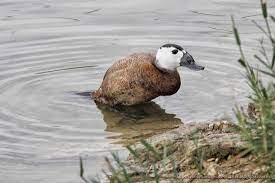
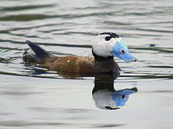

La malvasía cabeciblanca es un pato compacto, que mide entre 43 y 48 cm de largo y pesa entre 580 y 750 g, que tiene el cuello corto
y la cola larga y rígida.
Sus patas están situadas en una posición muy trasera, lo que les facilita el buceo y la natación pero
les hace torpes en tierra. Se caracterizan principalmente por la forma de su pico, que tiene una base muy abultada y redondeada.
Presenta un marcado dimorfismo sexual.
Los machos son más grandes y corpulentos.
Los machos adultos en época de reproducción
tienen el pico de color azul celeste intenso, la cabeza principalmente blanca, con una lista negra en el píleo.
También tienen
negros el cuello y la cola, mientras que el plumaje de su cuerpo es de color castaño rojizo.
Fuera de la época de reproducción su
cuerpo se torna más grisáceo, la cola y el cuello se aclaran, mientras que se extienden las zonas negruzcas de la cabeza de forma
variable entre el blanco, sobre todo en la nuca, y su pico se vuelve negruzco.
Las hembras adultas tienen el cuerpo castaño, y su
cabeza listada en pardo negruzco y blanquecino, con la parte superior negruzca y las mejillas blanquecinas cruzadas por una lista
negruzca, en invierno también se vuelve más grisáceas.
La malvasía cabeciblanca tienen un aspecto similar a la malvasía canela, de la que se diferencia principalmente por la forma de su
pico.
Las malvasías canelas tienen el pico en forma de cuña y carecen del gran abultamiento
de la base característico de la malvasía cabeciblanca.
El blanco se limita a las mejillas en los machos de malvasía canela,
mientras que las malvasías cabeciblancas carecen de blanco en las región infracaudal.
La lista que cruza la mejilla de las hembras
de malvasía cabeciblanca es más oscura y ancha.
Hábitat y distribución
Es la única especie de su género nativa del Paleártico. Este pato buceador cría en Asia occidental y central, el sur de Europa y
el norte de África.
Alrededor del Mediterráneo, incluida España y latitudes asiáticas similares se reproduce y permanece todo el
año, mientras que las poblaciones más norteñas se desplazan a estas latitudes llegando hasta el norte de Arabia y del subcontinente
indio. Su hábitat de la cría son lagos grandes de agua abierta con densa vegetación acuáticas, donde anida.
Costumbres y alimentación

Las malvasías cabeciblancas buscan alimento principalmente buceando, generalmente entre los 1,5 y 3 metros, y llegan a permanecer
sumergidas hasta un minuto seguido.
Son omnívoras, con predominio en su dieta de las larvas bentónicas de los dípteros.
También se alimentan de otros invertebrados como poliquetos, anfípodos, así como de plantas acuáticas y semillas.
Protección y conservación

La población originaria de la malvasía cabeciblanca se extendía desde Asia central por todo el Mediterráneo hasta la península
ibérica, incluyendo el norte de África.
Su área de distribución se ha fragmentado y mermado notablemente, especialmente en la zona
occidental.
Este pato está considerado en peligro de extinción por la reducción de sus poblaciones en los últimos años.
Este
declive es debido a la pérdida del hábitat, el deterioro de los humedales, la caza furtiva y al cruzamiento de la población
española con la introducida malvasía canela (Oxyura jamaicensis), cuya expansión supone una reciente amenaza.
Esto ha llevado
a combatir las poblaciones de la especie americana en Europa occidental con campañas de erradicación.